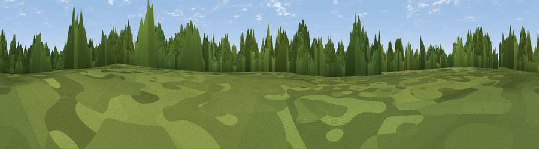

Ludley Hill
#36935 in England · top 50% of its area beats it · near Broad OakWhere it is
The exact computed spot (TQ 85002 21100). Click the marker for map links.
The view, rendered

A 360° render of this exact spot computed from the terrain model, tree cover and land cover — summer colours, afternoon light, calibrated against photographs of famous viewpoints. Real trees, hedges and buildings will differ in detail.
The panorama
Grey silhouette: terrain skyline in each direction (720 bearings, Earth curvature and refraction included). Dashed green: skyline with trees (+15 m) and buildings (+8 m) as obstacles. Blue strip: how far the ground is visible on each bearing.
Where the view opens
Wedge length = distance to the farthest visible ground on that bearing (vegetation-aware). Rings at 10, 25 and 50 km.
What fills the view
50% woodland · 40% grassland · 8% cropland · 1% built-up · 1% water
Angular shares of the visible panorama (visual magnitude), not map area. Landscape diversity 0.44 (0–1 Shannon).
Key numbers
More beautiful places nearby
The staircase of upgrades: each row has a higher view potential than everything closer. Driving times are estimates from straight-line distance, calibrated against real road routing — check an actual route before setting out.
| Place | Direction | Drive | Score |
|---|---|---|---|
| Viewpoint near Beckley | NE · 4 km | ~9 min | 45.4 |
| Viewpoint near Beckley | N · 4 km | ~10 min | 45.9 |
| Viewpoint near Udimore | ESE · 5 km | ~10 min | 59.7 |
| Viewpoint near Three Oaks | SSW · 9 km | ~18 min | 69.3 |
| Viewpoint near Fairlight | S · 9 km | ~18 min | 75.1 |
| Viewpoint near Fairlight | S · 10 km | ~19 min | 79.0 |
| Viewpoint near Willingdon | WSW · 33 km | ~51 min | 83.4 |
| Wilmington Hill | WSW · 35 km | ~53 min | 85.4 |
50.95962, 0.63296 · source: dobih hill · position refined by local search. Computed location — check access rights before visiting.